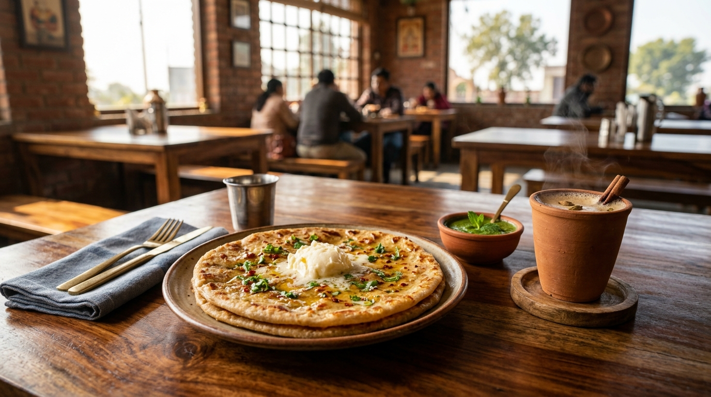
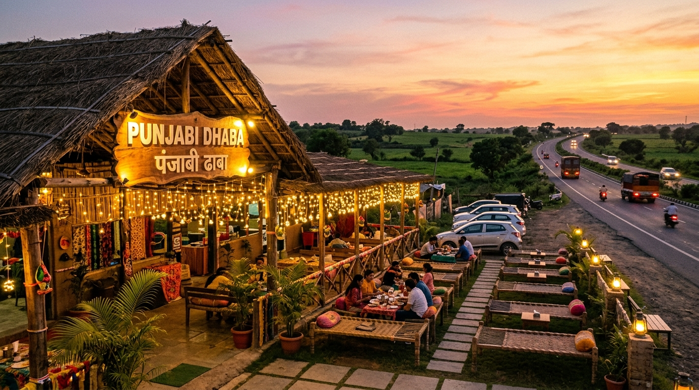

There is a special kind of tiredness that only long highway road trips can give you. It comes quietly around three o’clock in the afternoon. Your eyes grow heavy watching the endless gray asphalt and the yellow lane markings zoom past. Your hands feel stiff against the steering wheel, and the hum of the car engine begins to feel like a slow, repetitive lullaby. You find yourself longing for something simple: a shaded spot, a cold glass of water, and ten peaceful minutes away from the rush of the open road.
That is usually the exact moment when a roadside Indian dhaba appears on the horizon like a welcoming old friend. It does not advertise itself with glowing neon signs, glass automatic doors, or air-conditioned dining halls. Usually, it is just a low tin-roof structure built thoughtfully under the broad, leafy branches of a giant neem tree. A row of woven jute cots (charpais) rest on the dusty reddish soil, and a thin, fragrant curl of woodsmoke rises gently from an outdoor clay oven into the warm afternoon air.
Chapter 1: The Geometry of the Woven Cot
When you step out of your air-conditioned car, the hot countryside air greets you like a heavy wool blanket. Your shoes make a satisfying crunching sound on the gravel path as you walk towards the nearest tree. The moment you sit down on a wooden charpai, a miraculous change takes place. Your tired body instantly yields to the weave of the jute ropes. They give just enough to cushion your back, and as you stretch your legs straight out, you cannot help but wonder why modern interior designers ever tried to replace something so delightfully comfortable.
Before you even have a chance to look around or ask for a menu card, a young boy with bright, observant eyes and a cheerful grin walks up to your cot. He carries a polished stainless steel jug of cold water in one hand and four shiny metal glasses stacked neatly in the other. He sets them down with a clink, pours out a glass with impressive precision, and wipes his forehead with a folded cotton cloth tucked over his shoulder.
There are no glossy laminated menus at a highway dhaba. The waiter simply stands beside your cot, takes a short breath, and recites the day's offerings with the rhythmic speed of an ancient scholar reciting poetry: "Aloo paratha, paneer paratha, dal tadka, kadai paneer, tandoori roti, and fresh ginger kulhad chai, Sahibji." You do not need to read reviews or scan QR codes. You simply smile and say, "Bring two hot aloo parathas with white butter, and two cups of ginger tea."
"A highway dhaba does not sell fine dining; it offers honest warmth, generous food, and a quiet pause on a long, dusty journey."

Chapter 2: The Rhythm of the Clay Tandoor
If you sit back on your cot and watch the dhaba cook for five minutes, you will witness a master craftsman at work. The cook stands in front of a red-hot clay tandoor buried half-deep in the earth. His hands move with practiced speed and grace. He grabs a ball of fresh wheat dough, flattens it between his palms, and fills the center with a spicy mixture of mashed potatoes, coriander seeds, chopped green chilies, and a pinch of dried pomegranate powder.
With three quick rolls of his wooden rolling pin, the stuffed dough becomes a thick round disk. He lifts it onto a round cloth cushion, reaches deep into the glowing belly of the clay oven, and slaps the dough directly onto the red-hot inner wall. You hear a sudden, sharp sizzle. A minute later, using two long iron skewers, he pulls out a piping hot paratha—its surface blistered with golden-brown spots and crisp, charred edges that smell faintly of oak woodsmoke.
He places the hot paratha onto a broad metal plate, reaches into a cold earthen pot, and scoops out a dollop of fresh, homemade white butter (makhan) as big as a golf ball. He drops it right in the middle. The butter melts instantly into golden, shimmering rivers that soak deep into the flaky layers of the bread. He adds a spoonful of spicy green mint chutney and a ladle of thick homemade mango pickle on the side.
Taking that first hot bite while sitting under the green canopy of the neem tree, with a gentle afternoon breeze cooling your neck, feels infinitely better than eating at any expensive five-star restaurant. It is honest, rich, and prepared with genuine pride.
Chapter 3: The Alchemy of Highway Chai
While the parathas satisfy your hunger, it is the tea that restores your soul. Making tea at a highway dhaba is not a matter of dipping paper tea bags into warm water. It is an art form, a slow and sacred process of kitchen alchemy.
The tea maker (the Chaiwala) sits surrounded by brass containers, fresh roots of ginger, and green cardamom pods. He places a small brass pestle into a iron mortar and crushes the ginger and cardamom with rhythmic thumps. He tosses the aromatic paste into a large, blackened copper pot bubbling over a steady flame. He adds mountain black tea leaves, water, and thick, creamy farm milk.
He lets the mixture come to a rolling boil, lifting the pot high with iron tongs and pouring the liquid back in from a height to create a velvety frothy head. When it is ready, he strain the dark amber liquid into small, rustic clay cups called kulhads.
When you hold a hot kulhad in your hands, the warmth of the clay seeps into your fingers. The unbaked clay imparts a faint, earthy aroma (the smell of fresh rain hitting dry soil) into every sip. As you take your first sip—sweet, spicy with ginger, and scalding hot—the tiredness of three hours of driving vanishes instantly.

Chapter 4: Characters Under the Canopy
The true magic of a roadside dhaba is not just the food or the tea; it is the extraordinary community of strangers who gather under the neem tree. A highway dhaba is a great equalizer. It does not care about your bank account, your job title, or what kind of car you drive. Everyone sits on the same woven cots, eats the same hot parathas, and drinks the same tea.
On the cot to your left sits Gurmail Singh, a veteran long-haul truck driver with a snow-white beard and a bright orange turban. He has been driving a ten-wheeler truck carrying apples all the way from the orchards of Himachal down to the markets of Mumbai. He rubs his tired eyes, sips his tea, and tells you stories about driving through narrow mountain passes in the dead of winter where the clouds float lower than the tires.
On the cot to your right rests an elderly village farmer who has parked his sturdy black bicycle against the tree trunk. He wears a simple white cotton kurta and carries a brass walking stick. He looks up at the sky, sniffs the shifting breeze, and casually tells everyone, "The wind is turning south. We will have rain before midnight."
Nearby, two young college students on a motorcycle journey check their road maps and debate which route leads to the quietest river valley. For thirty unhurried minutes, no one looks at their mobile phones. No one is checking work emails or scrolling through social media feeds. Everyone simply sits together, listening to the rustle of the leaves, the distant roar of passing trucks, and the peaceful cadence of human conversation.
Chapter 5: Leaving the Shadow of the Neem Tree
By the time you finish your second cup of tea and pay the modest bill, the heavy heat of the afternoon has softened. The sun has begun its slow descent towards the western horizon, casting long, golden shadows across the highway fields. The air feels cooler, and a refreshing breeze rustles through the grass.
Your stiff muscles have stretched out, your mind feels calm and clear, and the long road ahead no longer feels daunting. You walk back to your car, open the door, and turn the key in the ignition. As you put the car in gear and slowly pull out onto the smooth asphalt, you take one last look in your rearview mirror.
The dhaba cook is already slapping another dough disk into the clay tandoor. The boy is pouring fresh tea into another row of clay cups, and a new car is pulling up to park under the cool shadow of the neem tree. The world on the highway will keep moving fast, but the humble roadside dhaba will always stand quiet and steady—reminding every weary traveler of a simple, beautiful truth: the best part of any journey is often the quiet moments when you stop to breathe.
Written by Gurdeep Sidhu
Founder of Sidhu's Views. Exploring slow travel, personal storytelling, handmade crafts, and creative living.